Authentication/Authorization
Dit hoofdstuk bestaat uit drie dingen: Gebruiker creatie, JWT tokens en springboot authorizatie
Gebruiker Creatie
Een gebruiker kan worden gemaakt doormiddel van het versturen van een POST request naar /auth/user met de parameters username, email, password. Als een gebruikersnaam of email al wordt gebruikt
wordt er een error teruggestuurd. Het versturen van de POST request zal een JWT TOken terugsturen. Dit zal in de front-end worden opgeslagen en gebruikt.
JWT tokens
Een JWT-token heeft drie gegevensvelden, allemaal versleuteld met Base64: header, payload en verificatiehandtekening.
In de koptekst zet je normaal gesproken het algoritme, in dit geval RSA. Voor de payload krijg je een 'sub' die het onderwerp is.
In mijn applicatie bewaar ik daar de userID, username en ROLE en EXP. De ROLE is dat van een gebruiker en EXP staat voor de vervaldatum van het token.
Voor de verificatie wordt een encryptie gebruikt. Ik gebruik RSA2048 als encryptie en deze sleutel wordt willekeurig gegenereerd.
Dit betekent dat als iemand de payload probeert te wijzigen, de handtekening niet meer geldig is

Authorizatie
Wanneer een request naar de api wordt verstuurd gaat het door een serie van checks om te kijken of de request de goede authorizatie heeft.
Er wordt dan gekeken of de verstuurder de goede Role heeft en of de verstuurder die request überhaupt mag maken. Als het antwoord ja is wordt het request doorgestuurd en als het antwoord nee is wordt er een http error 401 gegeven

Logging
Ik heb logging tot nu toe geimplimenteerd in mijn project. De reden hiervoor is om ervoor te zorgen dat het snel mogelijk is om te zien als er iets vreemds gebeurd of om een process goed na te kunnen kijken. Ik gebruik hiervoor org.slf4j. De reden waarom ik deze logging service heb gebruikt kun je zien bij het document “onderzoek naar logging”. Ik zal nu een paar verschillende voorbeelden laten zien van logging die worden toegepast in mijn project. Ga ervanuit dat er meer logging wordt toegepast dan alleen de voorbeelden.
logger.warn wordt gebruikt als er iets ongebruikelijks gebeurd.
logger.info wordt gebruikt om te informeren dat er iets gaat gebeuren, is gebeurd of aan de gang is.
logger.error wordt gebruikt als er een ernstige error wordt aangegeven.
Eerste voorbeeld is van de authenticatie methode:
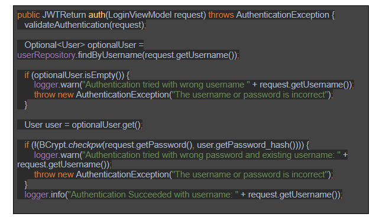
Tweede voorbeeld is de validateAuthenticatie() die checkt of de request überhaupt mogelijk is.
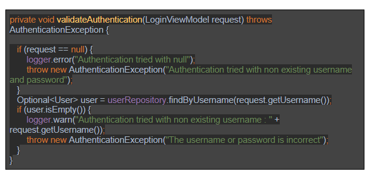
Laatste voorbeeld is de validateField() methode
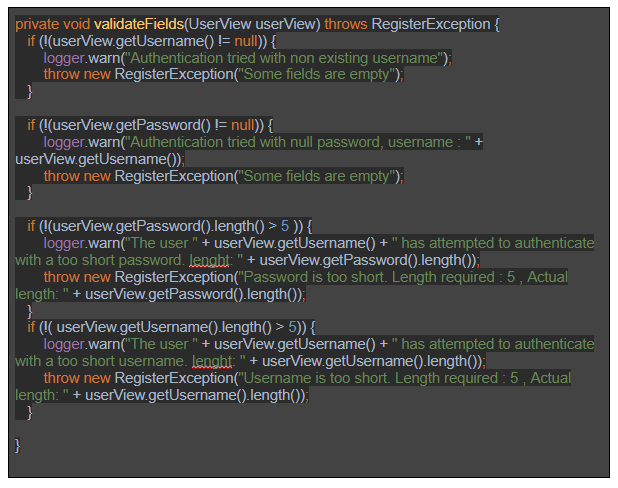
Regular Expression
Ik heb op elk input-veld validatie dat te maken heeft met username en email door middel van regular expressions. Alle input wordt met het patroon van de regular expression vergeleken. Als dit echter niet overeenkomt krijgt de gebruiker te zien wat er niet klopt. Daarnaast kan er dan ook geen request doorgestuurd worden totdat de input valide is. Als de ingevoerde tekst in het invoerveld niet overeenkomt met dat patroon, wordt deze als invalide gezien. Bij het uitvoeren van het request zal hierop een check gedaan worden en de gebruiker hierover een melding krijgen. Zo'n patroon kan er als volgt uitzien:
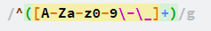
Deze regex is best simpel. Het laat alleen input toe dat grote of kleine letters zijn, de nummers 0 tot en met 9, de - en de _. Is dit niet het geval zal het een error geven.
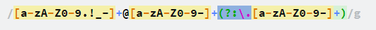
Deze regex is bedoelt voor het email adress. Het eerste gedeelte: [a-zA-Z0-9.!_-] laat alle cijfers, getallen en . - _ toe. Daana komt het tweede gedeelte de +@. Deze dwingt af dat na het eerste gedeelte er een @ voorkomt.
Dan heb je het derde gedeelte [a-zA-Z0-9-]. Deze is gemaakt zodat je bijvoorbeeld hotmail of live kan schrijven. Dan komt het vierde gedeelte (?:\. Deze dwingt een . af. Het vijfde gedeelte [a-zA-Z0-9-] vraagt voor bijvoorbeeld een .nl
In kort:
Eerste gedeelt: RoelLucassen
Tweede gedeelte: @
Derde gedeelte: hotmail
Vierde Gedeelte: .
Vijfde Gedeelte: nl
Allemaal samengevoegd: RoelLucassen@hotmail.com
Encryptie
Ik heb moeten kijken hoe ik mijn wachtwoorden moest gaan hashen. Eerst had ik gekeken naar MD%. Deze library zorgt voor een simpele beveiliging van wachtwoorden. Dit is echter heel makkelijk te brute-forcen en de hashesh zijn best zwak.
Daarna heb ik gekeken naar SHA algorithms en wukde uj deze gebruiken. Het is vrij vergelijkbaar met met MD5 behalve dat het betere hashes maakt. Daarnaast dacht ik SHA512 te gaan gebruiken totdat ik besefte dat dit nog steeds goed te brute-forcen is met een rainbow table bijvoorbeeld.
Ik ben toen gaan zoeken naar een hash methode die hier iets tegen kan gaan doen. Ik zocht naar een hash algoritme dat brute-force langzamer maakt.
De hash libraries die ik vond waren PBKDF2, Bcrypt en Scrypt. Deze algoritmen nemen een factor (ook bekend als beveiligingsfactor) of iteratietelling als argument. Deze waarde bepaalt hoe traag de hash-functie zal zijn. Hierdoor wordt het brute-forcen trager.
In dit geval heb ik gekozen voor Bcrypt omdat ze alle 3 ongeveer even goed zijn maar Bcrypt heeft een hele makkelijke implementatie.
Zoals in het plaatje hieronder begin ik met het creëeren van een hash doormiddel van bcrypt.gensalt(). De methode gebruikt 10 "rounds" waardoor het vaak opnieuw gehashed wordt. De complexiteit van de hash gaat expenentioneel omhoog. Dus van 10 naar 11 rounds houdt in dat in 11 rounds 2 keer zoveel increments zitten dan in 10. Hoe hoger je het echter legt hoe langer het duurt voordat de hash klaar is dus je moet kijken wat het beste is voor zowel een gebruiker als voor beveiliging.
Hierna hash ik de plaintext wachtwoord met de gensalt en dit maakt de hash. Daarna sla ik het op in de database.
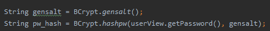
Om te kijken of een wachtwoord overeenkomt met een hash gebruik je de bcrypt.checkpw(PlainTextPassword, HashedPassword) methode. Dit is de implementatie van bcrypt.
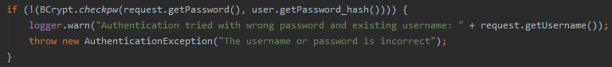
File Upload
Aangezien mijn site gebruik maakt van file upload heb ik dit geprobeerd te beveiligen. Ik heb gefocust op de volgende security aspecten hiervan:
File Size
File type
Encryptie
Ik heb hiervoor de volgende library gebruikt: PrimeNG. PrimeNG is een UI component library dat bepaalde componenten mooier/makkelijker maakt. In het geval van file upload
zorgt fileupload dat je direct kan vaststellen hoe groot een file maximaal mag zijn. Deze size wordt nog is in de backend gevalideerd.
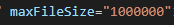
PrimeNG helpt ook met het selecteren van filetypes. In dit geval laat ik alleen PNG en JPG toe. Als het een ander type is dan de gezegde file type wordt het bestand automatisch weggehaald.
Wat ik eerst deed voor primeNG:
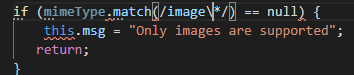
Hoe ik het doe met PrimeNG:
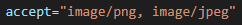
Hiernaast encrypt ik de files met base64. Ik doe dit om ervoor te zorgen dat het moeilijker is om bijvoorbeeld encoded images met malware door te sturen. Deze theorie is tevens correct getest nadat red teamers dezelfde mening erover hadden. Zie encryptie:
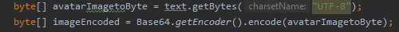
Recaptcha
(re)CAPTCHA wordt gebruikt om spam en geautomatiseerde handelingen tegen te houden. Bij elk post request wordt een captcha token gevalideerd. Als de token is geverificeerd zal de actie worden uitgevoerd en zo niet dan zal de actie niet worden uitgevoerd.
Om de token te genereren heb je een sitekey nodig. Je kan een sitekey verkrijgen door het aan te vragen bij Google. Je krijgt dan een public sitekey en een private sitekey. De public staat in de front-end en de private sitekey wordt in de back-end gebruikt om te verificeren.
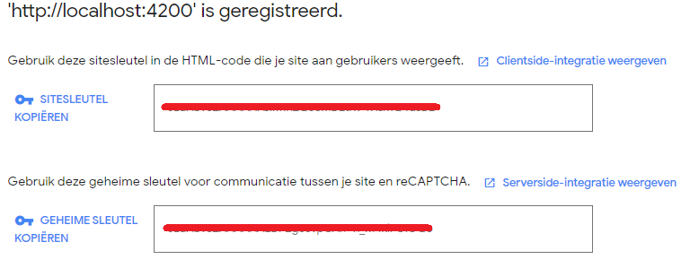
Om ReCaptchaV3 te gebruiken heb ik gebruik gemaakt van de ng-recaptcha library. Deze heeft dat goed voor angular geautomatiseerd. Het enige wat je dan hoeft te doen is op de pagina een script neer te zetten.

Hierna stuur je doormiddel van de RecaptchaServiceV3.execute een token door naar de server waar de captcha zal worden geverificeerd.
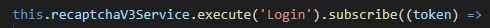
In de backend heb ik een class waar de token naar de Google Api wordt verstuurd. Bij google verificeren ze de token dan en dan sturen ze een JSON terug. De JSON zier er als volgt uit:
| "success": false|true |
whether this request was a valid reCAPTCHA token for your site |
| "score": number |
the score for this request. where 0 is a bot and 1.0 is a person |
| "action": string |
the action name for this request (important to verify) |
| "challenge_ts": timestamp |
timestamp of the challenge load (ISO format yyyy-MM-dd'T'HH:mm:ssZZ) |
| "hostname": string |
the hostname of the site where the reCAPTCHA was solved |
| "error-codes": [...] |
optioneel |
Hier is een voorbeeld van een captcha JSON response:
| "success" |
true |
| "score": number |
0.9 |
| "action": string |
Login |
| "challenge_ts": timestamp |
2020-12-09T13:03:49Z |
| "hostname": string |
localhost |
Database Privileges
Het is ook belangrijk om je database te beschermen. De eerste stap die ik had genomen was om ervoor te zorgen dat er meerdere accounts waren met verschillende privileges. Het eerste account heet readUser en kan alleen maar data selecteren. Mocht het wat anders doen dan wordt dat commando denied.
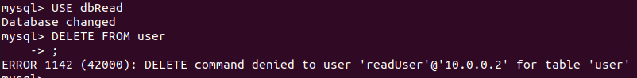
Een ander account is de adminUser. Dit account is gemaakt voor de administrators. Dit account heeft de privileges SELECT, DELETE, UPDATE en INSERT en kan verder niks doen.
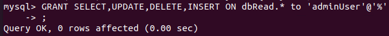